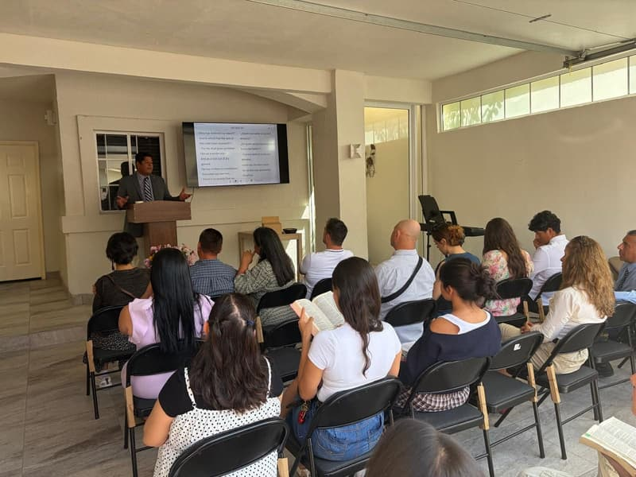
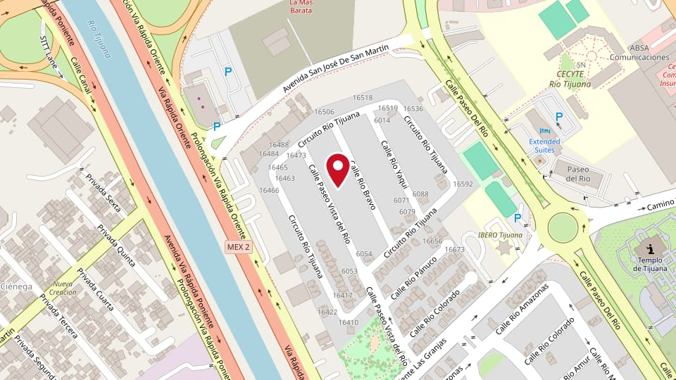
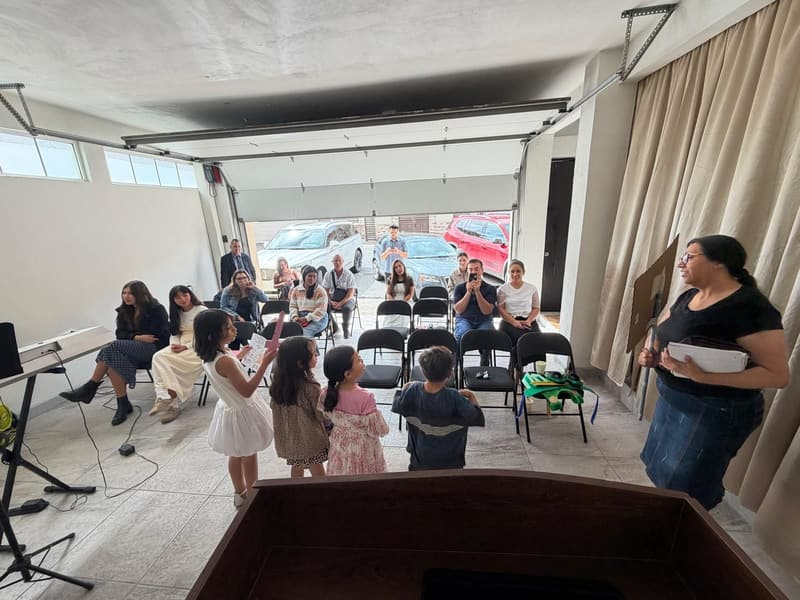

IPUL Tijuana
Servicios en inglés y español
- Domingo 11:00 a. m. Culto de Adoración
- Viernes 7:30 p. m. Culto de Oración y Enseñanza

Copia de revisión. Aún no se publica.
Dos iglesias en Baja California, un solo mensaje: Jesucristo.
En el amor no hay temor, sino que el perfecto amor echa fuera el temor; porque el temor lleva en sí castigo. De donde el que teme, no ha sido perfeccionado en el amor.

Servicios en inglés y español


Servicios en español. El mensaje se traduce al inglés si lo solicitas.


Te damos la bienvenida. Ya sea que busques una iglesia, respuestas o alguien que ore contigo, nos alegra que estés aquí. Jesús es el centro de todo lo que hacemos, y te invitamos a venir a conocerlo con nosotros.
Pastor Leonardo Hernández



Reina-Valera 1960® © Sociedades Bíblicas en América Latina, 1960. Renovado © Sociedades Bíblicas Unidas, 1988. Utilizado con permiso. Énfasis añadido.